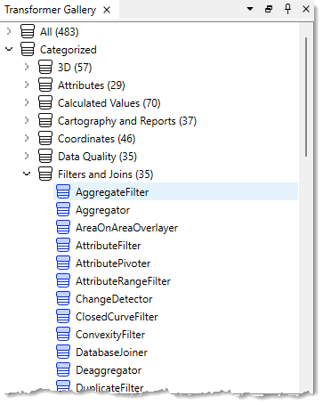
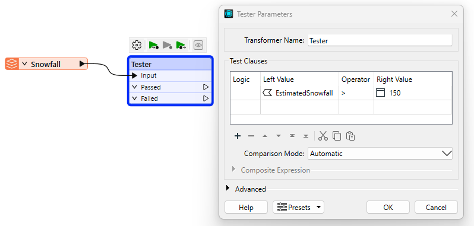
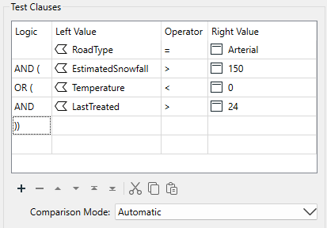
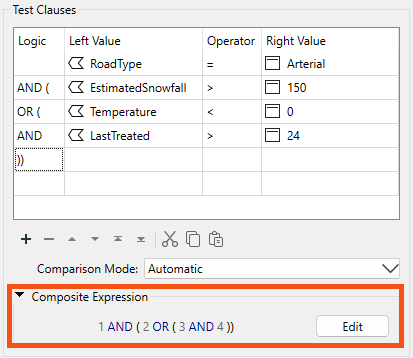
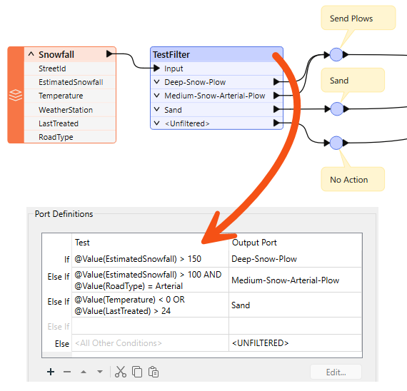

After completing this lesson, you’ll be able to:
Many transformers in the Filters and Joins category can carry out tests and redirect data according to the results:

Although the Tester transformer is the most used in this category, there are many related transformers, such as the TestFilter, GeometryFilter, AttributeFilter, SpatialFilter, and Sampler.
The Tester and TestFilter are the two critical transformers for conditional filtering. They test the values on attribute values.
The Tester transformer is generally for single tests that produce a Yes/No result.
For example, here we wish to decide whether to send out snow plows to a particular road based on whether the value of the Snowfall attribute is greater than 150 mm (approximately 6 inches):

If snowfall exceeds 150 (mm), the road feature passes the test, and the workspace will recommend sending snow plows.
Multiple Clauses
Each clause in the Tester is an individual test that allows a Passed/Failed result. For example, each of the following criteria might be separate tests:
However, the Tester allows multiple tests, where a user can combine any number of clauses using an AND and OR statement. So, instead of individual tests, I might ask:
The Tester also allows mixing AND and OR statements using a Composite Test. For example:

However complex the test becomes, it still results in a single Yes/No (binary) result; features will either pass or fail this set of tests.
It's also worth remembering that we aren't restricted to simple tests of equality (A=B); in the above, there are also "greater than" and "less than" tests. That's because you can use many different operators in a test clause.
You can specify the value of Logic from a dropdown list or type values in directly. That means you aren't limited to single parentheses, as the dropdown field would lead you to believe!
The overall logic of the conditional clauses is displayed in a text box below the tests.

The numbers in the expression refer to the row number in the test clauses table. So "1 AND 2" means the test clauses in row 1 and row 2 (the AND means both clauses have to pass for the overall feature to pass).
You can adjust the test composition by directly editing the composite expression. Click the Edit button and type in a new expression. Experienced users will find this faster than using the Logic column dropdown options.
The Logic column and the Composite Expression field are mirror images of each other. Any changes to either are reflected in the other. For example, if I changed AND to OR in the logic column (second row), the composite expression would change to match. Conversely, if I changed the composite expression to 1 AND ( 2 OR 3 ), then the test clauses would change to match, including deleting the now unused 4th row.
If a Tester or TestFilter has a feature cache, you can access a list of cached values to fill in your tests. This "data-aware" transformer dialog is available in the Tester, TestFilter, AttributeManager, and AttributeExposer.
Operators
The list of operators available in the Tester transformer (or in many of the other locations that make use of the Tester dialog) looks like this:
Besides the usual operators, some are based on a SQL WHERE clause. These include:
...plus there are other tests that check for the existence of attributes and values:
"Attribute has a value" is the opposite of the three other tests; for example, this attribute is not Null, AND it is not an empty string, AND it is not missing. Incidentally, "missing" means the attribute does not exist on the tested feature.
"Contains Regex" means only part of the string needs to match. For example...
Attribute Value: abcd
Search String: ^ab
Contains Regex: PassedFor example, the entire string doesn't need to match.
The TestFilter allows multiple conditions, each with multiple test clauses. Each condition is given an output port, with an additional output port for features that fail all test conditions.
The TestFilter is similar to the CASE or SWITCH command in programming or scripting languages. In Workbench, it looks like this:

Notice that there are multiple conditions and an output port for each. Each condition/port combination is equivalent to a single Tester transformer; hence, the TestFilter is an excellent way to combine multiple Tester transformers into one.
The TestFilter output ports can be given custom names rather than Passed/Failed, which is another advantage to this transformer over the Tester.
The TestFilter has the complete set of operators available with the Tester, such as equals, greater than, less than, and so forth. Each condition is tested in turn.
Features that pass are output through the matching output port. Features that fail are sent to the following condition in the list. Therefore, it’s essential to get the conditions in the correct order.
The TestFilter is very good for filtering a feature by a set of cascading conditions; for example, here are tests to determine whether to send out a snow plow:
- Has there been more than 150 mm of snowfall?
- Has there been more than 100 mm of snowfall, AND is this an Arterial road?
- Is the temperature less than zero degrees Celsius, OR was sand last applied more than 24 hours ago?
It’s a set of cascading tests because if there has been more than 150 mm of snow, the plows are sent out anyway; you don’t need to test any other criteria. So, the test order is significant. If every test fails, then the plows are not sent out. If using the above snowfall example, you were using three Tester transformers, you could save space on the workspace canvas and replace that setup with just a single TestFilter.
Because the TestFilter can carry out a single test (as well as multiple ones), it's possible to use it exclusively instead of the Tester transformer.
While using the TestFilter, you can choose to output all features through the First Passing Port or All Passing Ports using the Test Output dropdown.